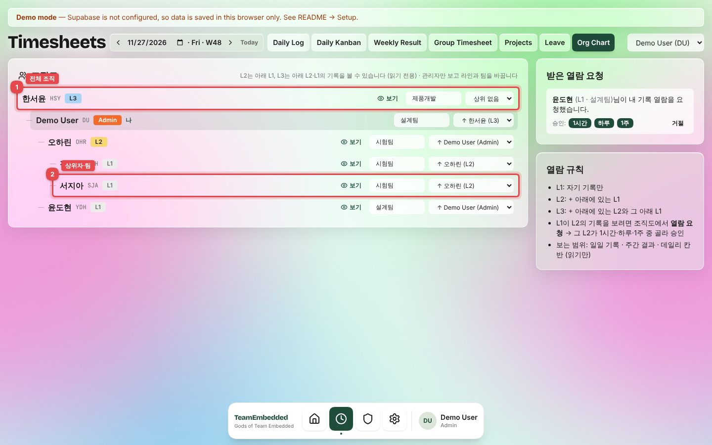
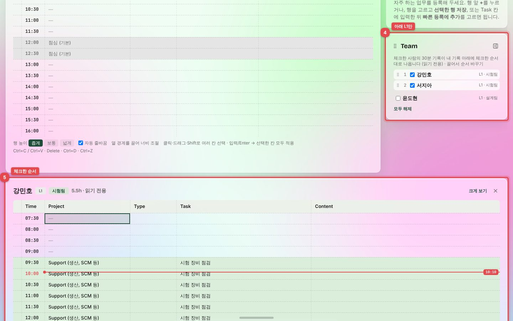
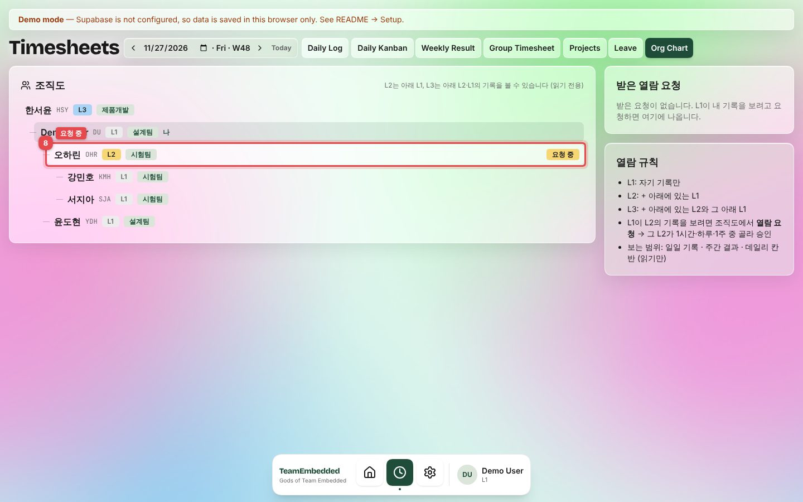
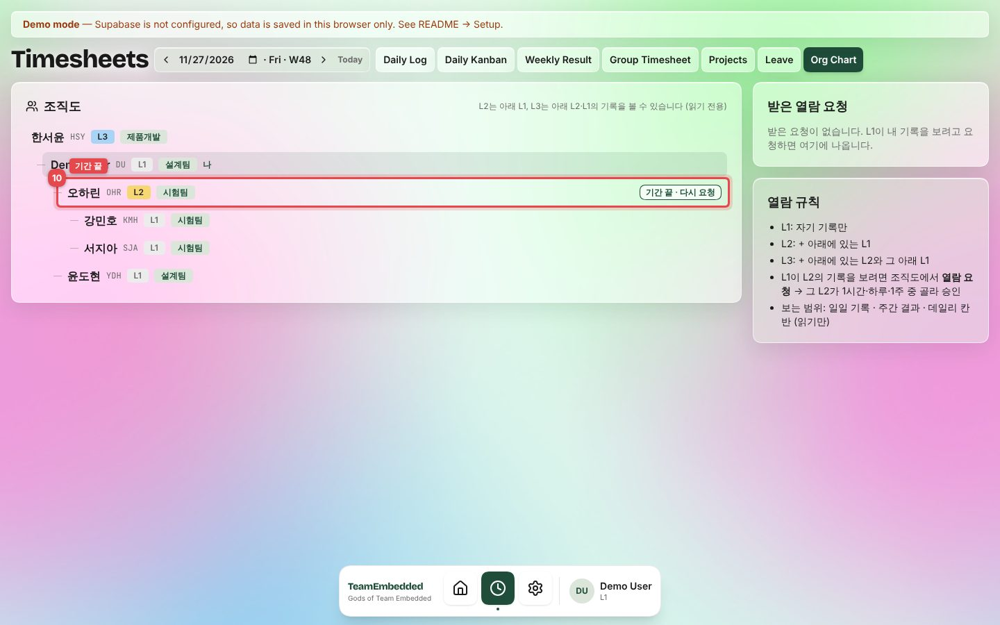

검증 보고서 · E2E
L1은 개인 자료만, L2는 자기에게 속한 L1, L3는 자기에게 속한 L2와 L1을 단계별로. 조직도 탭(모두 전체 조직을 봄, 조직 정보는 admin만 부여). L1이 L2 자료를 보려면 요청 후 일시적으로. 상위 관리자는 Today 같은 창에서 담당자 이름을 체크하면 작성창과 같은 창이 본인 타임시트 아래로 체크한 순서대로 보이고, 위치를 바꾸면 순서가 바뀜.
| # | 테스트 케이스 | 기대 결과 | 실제 결과 | 판정 근거 (Assertion) | 결과 | 증적 |
|---|---|---|---|---|---|---|
| 1 | 조직도 탭: 보고 라인대로 전체 조직이 들여쓰기로 보임 | 탭 'Org Chart', 한서윤(L3) → Demo User → 오하린 → 강민호, 서지아, 윤도현 | 탭 있음 · 0rem:한서윤 / 1.5rem:Demo User / 3rem:오하린 / 4.5rem:강민호 / 3rem:서지아 / 3rem:윤도현 | nav 에 Org Chart, org-row 순서와 margin-left(1.5rem 단위) | PASS | 화면 1 |
| 2 | 관리자가 상위자·팀 지정 (돌아오는 보고 라인은 고를 수 없음) | 한서윤의 선택지에 아래 사람 없음, 서지아의 선택지는 더 높은 등급만; 서지아 → 오하린 아래, 팀 '시험팀' (새로 고쳐도) | 한서윤: [상위 없음] · 서지아: [상위 없음, ↑ Demo User (Admin), ↑ 한서윤 (L3), ↑ 오하린 (L2)] · 저장 후 들여쓰기 4.5rem, 팀 '시험팀' | 선택지 목록 비교, 저장 후 서지아 margin-left 4.5rem(오하린 아래) && 팀 '시험팀' | PASS | 화면 1 |
| 3 | L2: 조직도는 전체를 보되 편집 없음, 받은 요청을 하루로 승인 | 조직도 6명, 상위자 선택 0개, 윤도현의 요청 → approved 24시간, 받은 요청 목록 비어짐 | 6명, 선택 0개, 요청 [{"status":"approved","hours":24}], 남은 요청 0개 | org-row 6 && select 0 && status 'approved' && 24h | PASS | — |
| 4 | L2: 팀원 창에는 아래의 L1만 | 강민호, 서지아, 윤도현 (같은 L2 오하린, 위의 L3 한서윤은 없음) | 강민호, 서지아, 윤도현 | 팀원 창 체크박스 이름 목록 | PASS | 화면 2 |
| 5 | 팀원 창: 체크한 순서대로 아래에 쌓이고, 끌면 순서 변경, 모두 해제 후 다시 체크한 순서 | 서지아→윤도현, 끌어서 윤도현→서지아, 해제 후 없음, 강민호→서지아, 새로 고쳐도 강민호→서지아 | 서지아→윤도현 / 윤도현→서지아 / 없음 / 강민호→서지아 / 강민호→서지아 | team-sheet 의 data-person 순서 | PASS | 화면 2 |
| 6 | 팀원 기록은 작성창과 같은 30분 표, 내 기록 아래, 읽기 전용 | 서지아 10:00 업무 '시험 지원' 그대로 (입력해도 안 바뀜), 내 기록보다 아래 | '시험 지원' → '시험 지원', 내 기록 아래 true | data-cell=20:task 더블클릭+입력 후 같은 글자 && daily-log-page.y < team-sheets.y | PASS | — |
| 7 | L3: 아래의 L2와 그 아래 L1까지 | 강민호, 서지아, 오하린, 윤도현 (위의 L3 한서윤은 없음) | 강민호, 서지아, 오하린, 윤도현 | 팀원 창 체크박스 이름 목록 | PASS | — |
| 8 | L1: 팀원 창 없음, L2에게만 열람 요청 → 요청 중 | 팀원 창 0개, 한서윤(L3)에는 요청 버튼 없음, 오하린(L2)에 '열람 요청' → 누른 뒤 '요청 중' | 팀원 창 0개, 한서윤 버튼 0개, 오하린 '열람 요청' → '오하린 OHR L2 시험팀 요청 중' | team-panel 0 && 한서윤 행 버튼 0 && 오하린 행 버튼 '열람 요청' 후 '요청 중' | PASS | 화면 3 |
| 9 | 승인된 동안: 팀원 창·주간 결과·칸반에서 그 L2를 읽기만 (다른 탭은 내 자료) | 팀원 창 '오하린', 그 기록 표시, 고르기 [Demo User, 오하린], 주간 결과에 '시험 계획서', 칸반 '오하린의 보드 (읽기 전용)', 그룹 타임시트엔 고르기 없음 | 팀원 창 [오하린], 기록 [오하린], 고르기 [Demo User (DU), 오하린 (OHR)], 주간 '시험 계획서' true, 칸반 '오하린의 보드 (읽기 전용)', 그룹 고르기 0개 | 팀원 창 이름, team-sheet, Engineer 옵션, 주간 결과 본문, 칸반 안내, Group Timesheet 의 Engineer 0개 | PASS | — |
| 10 | 승인 기간이 끝나면 다시 내 자료만 | 팀원 창 없음, 오하린 행에 '기간 끝 · 다시 요청' | 팀원 창 0개, 오하린 '오하린 OHR L2 시험팀 기간 끝 · 다시 요청' | team-panel 0 && '기간 끝' 글자 | PASS | 화면 4 |
| 11 | 휴대폰: 조직도가 화면 안에 | 페이지 폭 ≤ 390 | 390px | documentElement.scrollWidth ≤ 390 | PASS | — |
| 12 | 페이지 오류 없음 | 0건 | 0건 | pageerror 수 === 0 | PASS | — |
빨간 테두리와 번호는 표의 테스트 케이스 번호입니다. 그 요소를 확인해 판정했습니다.



